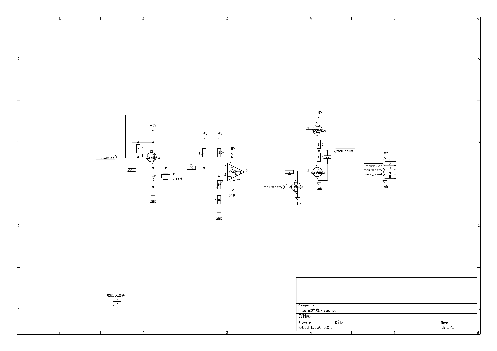
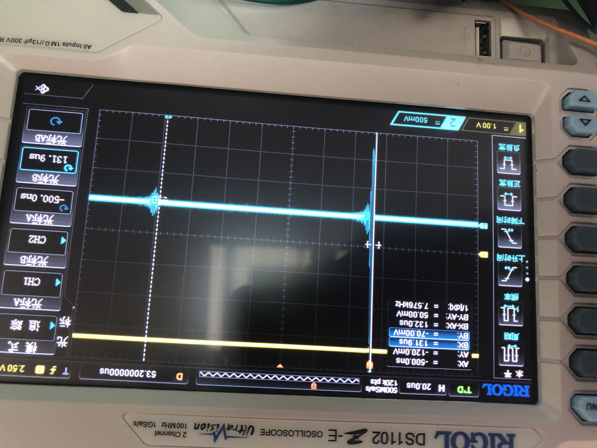

超声波换能器在液体中发射超声波并接收回波。（空气中同理）
超声波换能器原理是(正/逆)压电效应。
电路原理：mcu_pluse发低电平脉冲 - buck-boost电路升压 - 超声波换能器 - 运算放大器比较电压检出回波 - 电阻和mcu控nmos过滤发送阶段波形 - 模拟浮栅晶体管把超声波传输时间转为高电平 - mcu定时计数 ；
超声波换能器型号：NU1ME21TR-1
电路图：

波形图：

```
void ultrasound_pulse()
{
unsigned int i;
GPIOB->ODR |= GPIO_ODR_ODR9;//modify lock
for(i=0;i<100;i++);//take effect
GPIOB->ODR &= ~GPIO_ODR_ODR8;//pulse
GPIOB->ODR |= GPIO_ODR_ODR8;
for(i=0;i<500;i++);//modify wait time need test !
GPIOB->ODR &= ~GPIO_ODR_ODR9;//modify unlock
for(i=0;i<10000;i++);//wait echo
}
unsigned int tof_get()
{
unsigned int time_start, time_stop, time_spread;
time_start = TIM2->CNT;
ultrasound_pulse();
time_stop = TIM2->CNT;
if(time_stop > time_start) time_spread = (time_stop - time_start);
else time_spread = 0x10000 - (time_start - time_stop);
return (time_spread - (int)(1.43*72));//transfer modify us
}
```